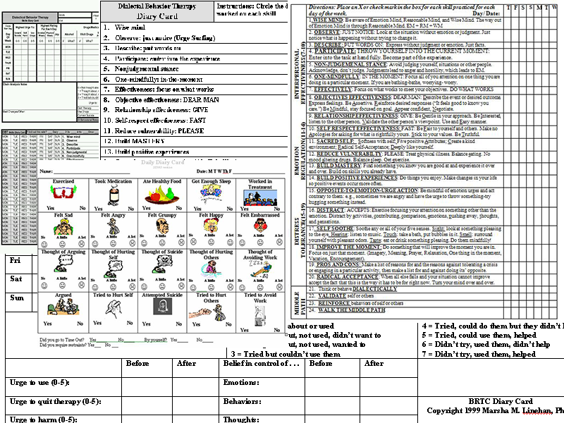

Dialectical Behavioral Therapy
DBT is a therapy designed to help people change patterns of behavior that are not helpful, such as self-harm, suicidal ideation, and substance abuse. This approach works towards helping people increase their emotional and cognitive regulation by learning
about the triggers that lead to reactive states and helping to assess which coping skills to apply in the sequence of events, thoughts, feelings, and behaviors to help avoid undesired reactions. DBT assumes that people are doing the best
they can but are either lacking the skills or influenced by positive or negative reinforcement that interfere with their ability to function appropriately.
This site is meant as a companion for
people who are currently or have recently gone through Dialectical Behavioral Therapy, as an alternative to traditional
diary cards.
Traditionally, diary cards have been filled out with pen and paper, in a variety of
confusing and convoluted forms, shown here.
